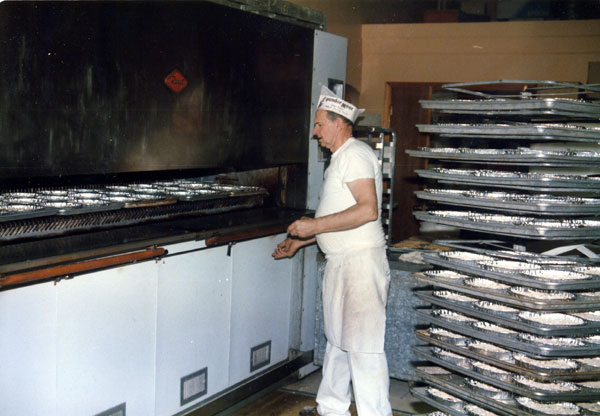
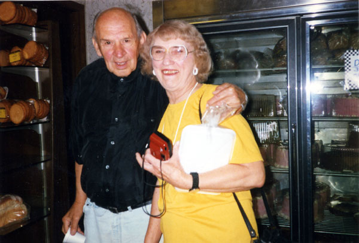
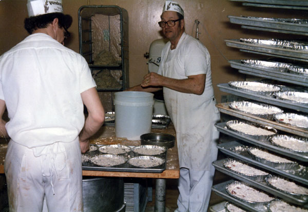
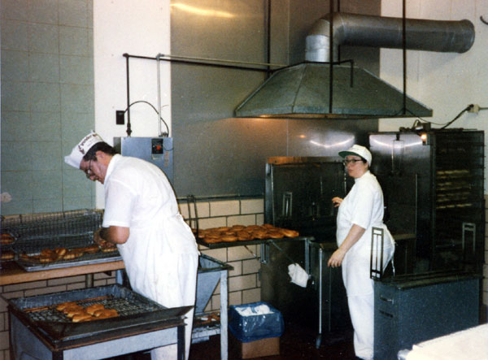
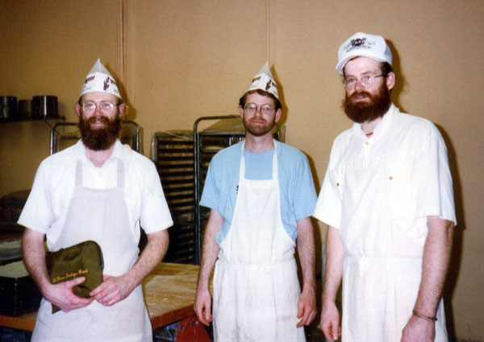
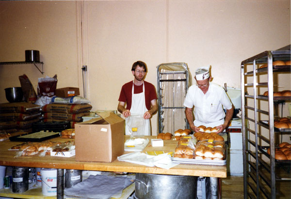
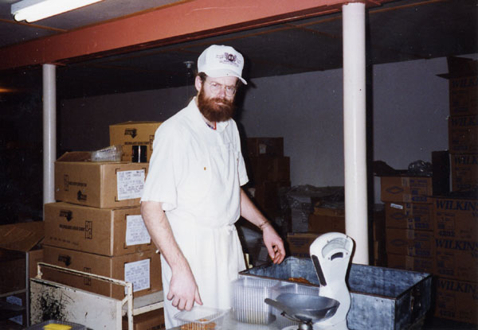
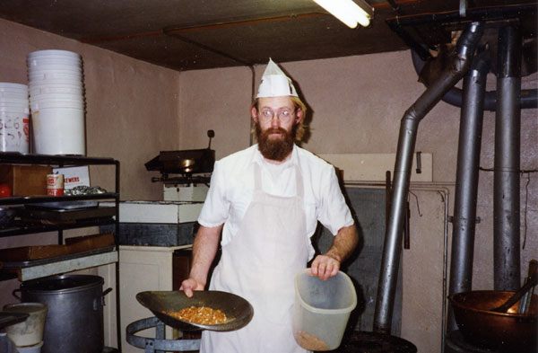
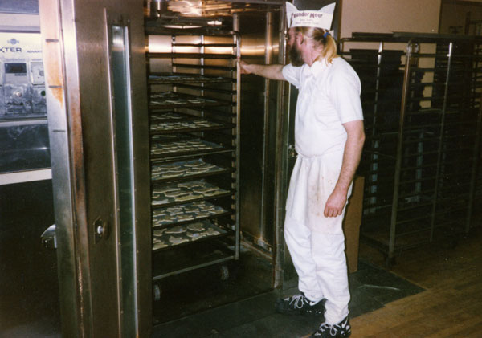
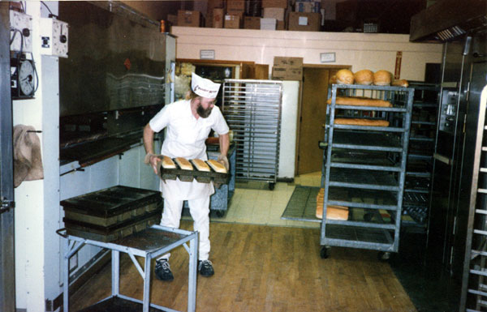

Meet the Bakers

Laurence Sanow at the oven, baking coffee cakes.

Laurence and his wife Phyllis.

Clarence making coffee cakes.

The donut room! Winter 1996-1997.

Mark, Steve, and Dennis Vander Meer, December 1994.

Steve and his dad (Pete Jr) working together, December 1994.

Dennis boxing up peanut brittle, December 1994.

Mark working in thee candy room, December 1994.

Mark baking cookies in that newfangled rack oven, winter 1996-1997.

Mark baking bread, winter 1996-1997.
Mon, September 17th 2007, 9:11 PM PDT
Mom
You did a great job of organizing our mess of snapshots.
Tue, April 29th 2008, 10:25 PM PDT
Ryan Getz
Wow! Uncle Dennis, I must say I love that beard. Its only gotten bigger since!